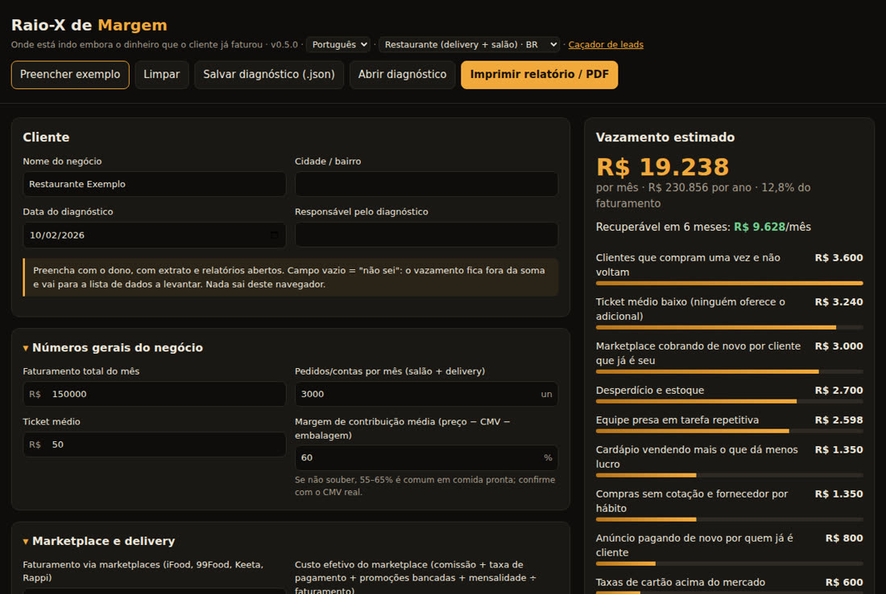
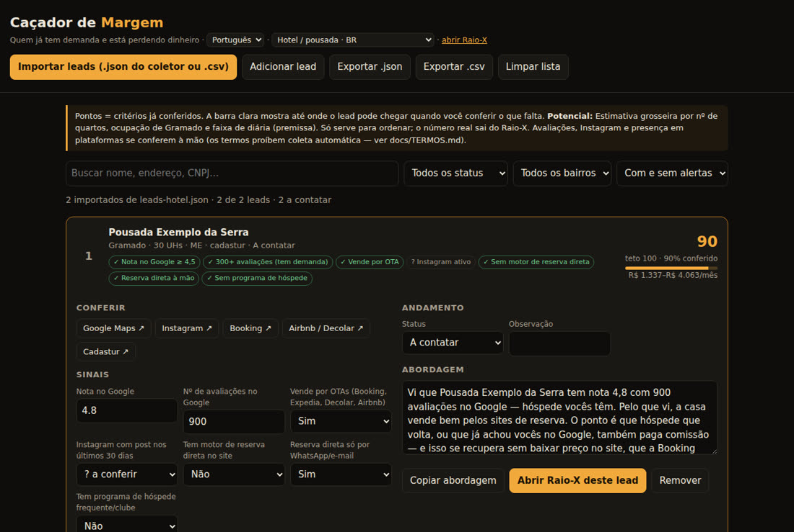

Não venda IA nem aplicativo. Mostre em reais o que está vazando, corrija e prove o que voltou para o caixa. Caçador de leads com dados abertos, Raio-X com relatório em PDF, receitas de correção e medição — tudo no navegador, sem instalar nada.
A pergunta deixa de ser "você precisa de IA?" e passa a ser "onde está indo embora o dinheiro que você já faturou?". O kit cobre o caminho inteiro, do lead à mensalidade.
Lista os negócios de um bairro com fontes abertas (CNPJ da Receita, CNES, Cadastur, OpenStreetMap), lê o site de cada um e pontua quem tem demanda e está perdendo dinheiro. Gera a abordagem pronta.
Preenchido com o dono em 40 minutos: calcula cada vazamento em R$/mês (em margem, não em faturamento), ordena do mais rápido ao mais difícil e imprime o relatório "você está deixando R$ X por mês".
Para cada vazamento, um guia de correção com caminho pronto (SaaS) ou aberto, checklist e a forma de medir antes × depois — o que sustenta a cobrança recorrente.
Cada setor é um pacote de dados (perguntas, fórmulas, quanto dá para recuperar, como medir). Outro idioma é outro mercado, com plataformas, pagamentos e regras próprias.
| Setor | 🇧🇷 Brasil (PT) | 🌎 América Latina (ES) | 🌐 Global (EN) |
|---|---|---|---|
| Restaurante | iFood, 99Food, Keeta · Pix | Rappi, DiDi Food, Uber Eats · CoDi/DiMo | DoorDash, Uber Eats, Deliveroo · cartão |
| Hotel / pousada | Booking (paridade restrita), Airbnb | Booking 15/18/23% · Chile sem paridade | UE sem paridade (DMA) |
| Clínica / consultório | faltas, glosa, regras CFM/CFO | inasistencias, aseguradoras | no-shows, claim denials |
| Salão / barbearia | retorno no ciclo, clube | regreso en el ciclo, club | rebooking, membership |
| Serviços com agenda (genérico) | modelo padrão para qualquer negócio de hora marcada — os perfis herdam dele | ||
Começar pelo vazamento mais rápido (normalmente taxa de cartão) paga a implantação e compra confiança para o resto.
Marketplace cobrando de novo por cliente que já é seu, taxas de cartão, antecipação, clientes que não voltam, ticket baixo, desperdício, compras, cardápio, mão de obra, anúncio e caixa.
Comissão de OTA em hóspede recorrente, programa de visibilidade que não se paga, quarto vazio na baixa temporada, hóspede que não volta, extras, no-show, cartão e caixa.
Falta sem aviso, horário nunca agendado, cliente que não volta no prazo, plataforma por cliente, adicional, cartão — e na clínica, glosa e tratamento que não começa.
O Raio-X e o Caçador abrem no navegador, até offline. Os dados do cliente não saem da sua máquina.
Só um navegador. Online pelo GitHub Pages ou baixando o repositório e abrindo o arquivo.
# online https://inematds.github.io/raio-x-margem/app/ # ou local git clone https://github.com/inematds/raio-x-margem xdg-open raio-x-margem/app/index.html
Python 3 e Node, sem bibliotecas extras. O CNPJ baixa ~7 GB filtrando no caminho (só o cache do setor fica no disco).
python3 --version # 3.10+ node --version # 18+
Busca de site/Instagram pelo Firecrawl (gasta crédito, só com --confirmar) e revisão dos sinais por IA pela assinatura (claude ou codex), sem chave de API.
export FIRECRAWL_API_KEY=... # opcional claude --version # opcional
Exemplo real do piloto: restaurantes do Batel, em Curitiba.
CNPJ da Receita (código de município da Receita, não do IBGE) e OpenStreetMap. Para clínicas, some o CNES; para hotéis, o Cadastur. Ou tudo de uma vez: tela Coletar (python3 coletor/servidor.py) ou bash coletor/rodar.sh — lista, junta, prioriza por nome de fachada e enriquece.
python3 coletor/cnpj.py --uf PR --municipio 7535 --cidade Curitiba --bairro BATEL --saida dados/cnpj-batel.json python3 coletor/osm.py --cidade Curitiba --bairro Batel --saida dados/osm-batel.json node coletor/juntar.js dados/cnpj-batel.json dados/osm-batel.json > dados/leads-batel.json
Pedido próprio? WhatsApp à mão? Fidelidade? Links de marketplace? O script lê o site respeitando o robots.txt; a IA pela assinatura revisa os sinais.
python3 coletor/sitios.py --entrada dados/leads-batel.json --saida dados/leads-batel-enr.json \ --limite 30 --ia claude # --buscar firecrawl --confirmar para achar sites
Nota e avaliações no Google, Instagram ativo e presença no marketplace se conferem com um clique (a tela abre a busca pronta). A pontuação só conta o que foi conferido; a barra clara mostra o teto.
app/cacador.html → Importar leads → dados/leads-batel-enr.json
Ela só cita o que foi conferido ("nota 4,8 com 3.000 avaliações…") e convida para um diagnóstico de 40 minutos sem custo. Marque o andamento até o Raio-X.
Copiar abordagem → Abrir Raio-X deste lead
Com extrato do marketplace e da maquininha abertos. Campo vazio = "não sei": fica fora da soma e vira lista de dados a levantar. Salve o diagnóstico (.json) — é a base "antes".
app/index.html?setor=restaurante → Imprimir relatório / PDF + Salvar diagnóstico
No máximo 3 receitas, começando pela mais rápida. O botão Gerar proposta do Raio-X monta a proposta com os números do cliente e sugere preço dentro da regra: implantação diluída em 6 meses + mensalidade ≤ 1/3 do recuperável. Fechou? Contrato e termo LGPD (modelos para o Brasil) já estão no kit.
app/proposta.html → Imprimir / PDF kit-comercial/contrato.md kit-comercial/termo-lgpd.md
Cada receita tem caminho pronto (SaaS) ou aberto, checklist e o que não fazer — por exemplo, nunca QR de canal próprio dentro da sacola do iFood.
docs/modulos/ cardapio-vivo · aquisicao · cobranca · marketing-local · canal-proprio · servicos-agenda · hotel-*
O relatório já traz "como vamos medir" de cada vazamento: base antes, métrica depois e janela. O Painel de Recuperação abre o diagnóstico salvo, recebe os números de cada mês e mostra, vazamento a vazamento, quanto voltou para o caixa e quanto falta para a meta. Bônus por resultado só sobre o que dá para atribuir (taxa de cartão, por exemplo).
app/painel.html → Abrir diagnóstico (o .json do passo 5) → Lançar mês # antes × depois, % da meta, acumulado e bônus
O kit não raspa Google Maps, Instagram nem iFood (os termos proíbem), não usa contato de cliente vindo de marketplace e só guarda dados de empresa (LGPD). Clínica segue o conselho profissional: dentista não anuncia preço nem faz "indique e ganhe". Tudo com trecho e link em docs/TERMOS.md.
Existem ferramentas abertas prontas para raspar Google Maps e Instagram. O kit não usa: os termos proíbem e o risco cai em você e no cliente. Para cada fonte há um caminho que traz a mesma informação sem quebrar regra.
Ordem de preferência: 1) dado do próprio dono (ele exporta do painel dele) · 2) cadastro público oficial (CNPJ, CNES, Cadastur, OpenStreetMap) · 3) sinal indireto (o site do negócio linka app, Instagram, motor de reserva) · 4) API oficial com autorização · 5) conferência assistida (~1 min por lead, só nos melhores).
| Fonte | Traria | O que impede | No lugar |
|---|---|---|---|
| Google Maps | nota, avaliações, telefone, horário | Termos do Maps Platform 3.2.3 (sem raspagem) | conferência no Caçador · Places API (só place_id) · Perfil da Empresa do dono |
| atividade, posts, seguidores | Termos do Instagram e da Meta (coleta automatizada) | @ do site do negócio · conferência · API Business Discovery · Insights do dono | |
| Apps de delivery | presença, nota, preço | Termos do iFood §8 e de cada app | link no site do restaurante · busca web · relatório do portal do parceiro |
| Sites de reserva | presença, nota, preço | Booking A15.2, Airbnb 11.1, Tripadvisor | Cadastur · site do hotel · extranet da OTA com o dono |
Coleta automática, toda com fonte aberta: tela Coletar (com python3 coletor/servidor.py) ou um comando: bash coletor/rodar.sh --setor restaurante --uf PR --cidade Curitiba --bairro Batel.
Rodado em 01–02/10/2026 no Batel (Curitiba) e em Gramado e Canela (RS). Relatório completo em docs/PILOTO-2026-10.md.


394 empresas ativas no CNPJ + OpenStreetMap = 417 leads. Nos 30 enriquecidos, metade sem pedido próprio e só 2 com fidelidade.
197 no Cadastur, 383 CNPJs de hospedagem — 200 fora do Cadastur. 60 de 69 já têm motor de reserva: o vazamento é a fatia da OTA, não a falta de canal.
318 empresas de saúde ativas no CNES (174 consultórios, 81 clínicas, 63 policlínicas), só com CNPJ e natureza jurídica de empresa.
Versão atual: 0.8.1 — 15 pacotes (5 setores × 3 mercados), 60+ testes automáticos.